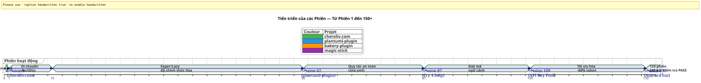
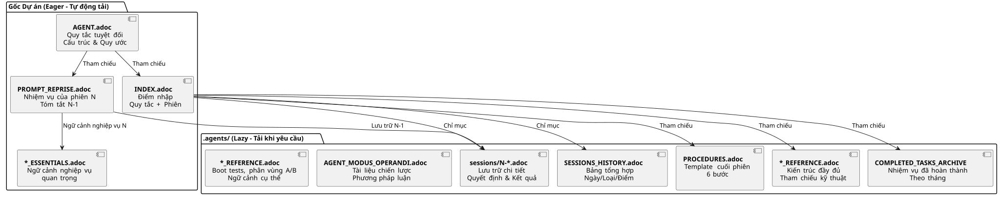
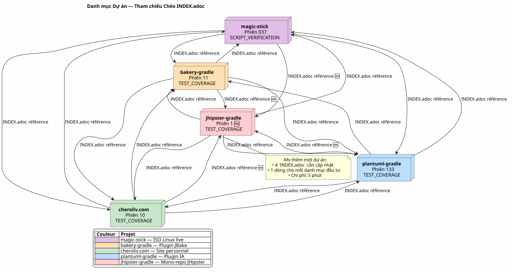
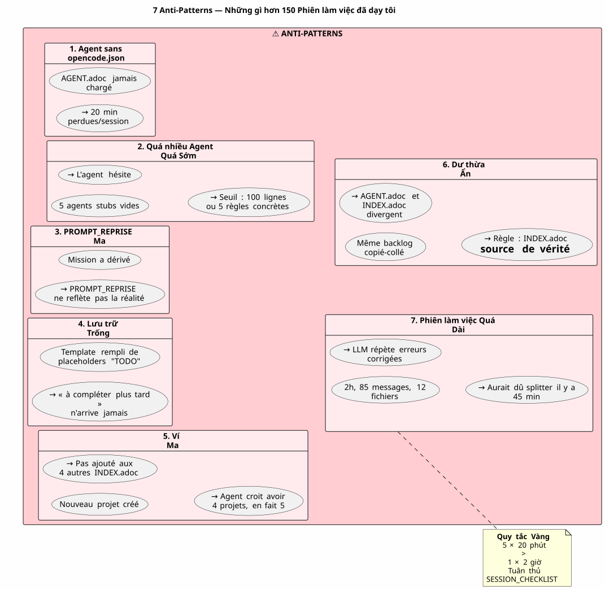

Điều khiển Agent AI bằng AsciiDoc: Chiến lược Eager/Lazy của tôi cho các phiên Opencode không bị rò rỉ ngữ cảnh
Đăng ngày 24 April 2026
Tóm tắt
Khi làm việc với một agent AI như Opencode trong các dự án phức tạp qua nhiều phiên làm việc, chúng ta đối mặt với một vấn đề cơ bản:sự rò rỉ ngữ cảnh. Agent không nhớ phiên làm việc trước đó. Tất cả những gì đã được giải thích cho nó — kiến trúc, các quy ước, trạng thái của backlog — đều bị mất. Việc xây dựng lại ngữ cảnh này trong mỗi phiên làm việc là tốn kém, chậm chạp và dễ gây ra sai sót.
Bài viết này trình bày chiến lược thủ công mà tôi đã xây dựng để giải quyết vấn đề này: một hệ thống quản trị bền vững dựa trên các tệp AsciiDoc, với một sự phân đôiEager/Lazyđể tối ưu hóa việc tiêu thụ token ngữ cảnh, và mộtquy trình kết thúc phiên bắt buộcđể đảm bảo tính liên tục.
Địa điểm: Thứ Hai ngày 21 tháng 4, 9h00
Tôi mở lại Opencode để tiếp tục làm plugin Gradle của mình`plantuml-plugin`Tối qua, tôi đã dành ba tiếng để thảo luận với agent về kiến trúc của pool khóa API — rotation round-robin, gestion des quotas, fallback automatique. Sáng nay, agent nhìn tôi với ánh mắt ngơ ngác như cá vàng.
Vui lòng cung cấp văn bản cần dịch. — Xin chào, tôi là trợ lý Opencode của bạn. Tôi có thể giúp gì cho bạn hôm nay? Vui lòng cung cấp văn bản cần dịch.
Không có — À đúng rồi, nhóm khóa API, chúng ta đang dừng lại ở cấu trúc YAML. Không có — Chú ý,`PlantumlManager`là một đối tượng Kotlin singleton, không phải là một lớp. Không có — Không, hôm qua chúng ta đã quyết định rằng`SyntaxValidationResult`vẫn là một sealed class lồng trong`PlantumlService`Please provide the text you would like me to translate.
Mọi thứ đều phải làm lại. Hay đúng hơn là: mọi thứ đều phải giải thích lại. Tôi sẽ dành hai mươi phút đầu tiên của phiên làm việc để tái lập một ngữ cảnh mà agent đã nắm giữ từ hôm qua. Hai mươi phút đốt token. Hai mươi phút lẽ ra tôi có thể lập trình, nhưng lại phải làm công việc hướng dẫn bắt buộc.
Đây không phải là lỗi của Opencode. Đó chính là bản chất của các LLM hội thoại: giữa hai phiên làm việc, bộ nhớ đệm sẽ bịđã được xóa hoàn toàn. Agent không nhớ về nhiệm vụ trước đó, các quyết định đã đưa ra, những cạm bẫy đã được xác định, hay đoạn mã code mà chúng ta đã cùng viết.
Tôi đã trải qua điều này hàng chục lần. Trên bốn dự án cùng lúc. Với những phiên làm việc nối tiếp nhau trong nhiều tuần. Tôi đã tính toán: trung bình,30 đến 40% thời gian phiênđã được dành để tái ngữ cảnh hóa agent. Tại phiên 87 của dự án`plantuml-plugin`, tôi đã mất bình tĩnh. Tôi không thể tiếp tục giải thích lần thứ mười rằng`AttemptEntry`là một data class cấp cao nhất trong`DiagramProcessor.kt`Vì bạn chưa cung cấp nội dung cần dịch, vui lòng gửi đoạn văn bản tiếng Pháp mà bạn muốn chuyển sang tiếng Việt.
Tôi cần một hệ thống. Không phải một bản hack. Mà là một cơ chế quản trị thực sự.
Sáng Thế: Từ Hỗn Mang đến Phương Pháp
Những Phiên chơi Đầu tiên: Thời đại Bóng tối
Dự án đầu tiên của tôi với Opencode,plantuml-plugin, đã bắt đầu mà không có bất kỳ sự quản trị nào. Tôi đặt một câu hỏi, agent trả lời, chúng tôi lặp lại, phiên làm việc kết thúc, và ngày hôm sau chúng tôi lại bắt đầu từ con số không. Đó là phiên 1, rồi phiên 2, rồi phiên 3… cho đến phiên 62 khi tôi nhận ra mình đã mất hàng giờ cộng dồn chỉ để giải thích lại cùng một kiến trúc.
Tại phiên họp 62, các con số đã rõ:198 bài kiểm tra đơn vị đạt, 42 bài kiểm tra chức năng đã được xác nhận, plugin hoạt động. Nhưng chi phí nhận thức là không thể chịu nổi. Mỗi phiên làm việc mới đều bắt đầu bằng một bài độc thoại dài hai mươi phút về cấu trúc của dự án.
Tập phim về site.yml Bị Phá Hủy (Session 2, bakery-plugin)
Phương pháp này cũng ra đời từ một thảm họa. Trong dự án`bakery-gradle`, tại phiên 2, tôi yêu cầu tác nhân sửa đổi tệp`site.yml`. Tác nhân, mà không kiểm tra xem tệp có được đánh phiên bản hay không, thực hiện một`Write`hoàn chỉnh ghi đè lên nội dung. Kết quả là: các token thực tế (khóa API Firebase, bí mật triển khai) bị thay thế bằng các placeholder giả. Tệp này không nằm trong git — nó nằm trong`.gitignore`để bảo vệ các bí mật.
Không lưu. Không`git restore`có thể. Tôi bị kẹt rồi. Tôi phải xây dựng lại tệp cấu hình một cách thủ công, tìm lại các token trong trình quản lý mật khẩu và lắp ghép mọi thứ lại với nhau.
Chính từ sự thất vọng này đã nảy sinh sựQuy tắc Tuyệt đối 1bHãy cung cấp văn bản cần dịch.
Vui lòng cung cấp văn bản cần dịch. KHÔNG BAO GIỜ ghi đèmột tệp config với một`Write`hoàn tất khi một`Edit`một phần là đủ.KHÔNG BAO GIỜ thay thếcác giá trị nhạy cảm bằng các giá trị giả.Kiểm tra git check-ignore và `git ls-filestrước mọi thay đổi. Please provide the French text you would like me to translate.
Quy tắc này, giờ đây đã được khắc sâu vào mọi tệp tin của tôi`AGENT.adoc` et `INDEX.adoc`trong số bốn dự án, nảy sinh từ một lỗi thực tế đã khiến tôi mất một giờ làm việc thủ công.
Di cư Markdown → AsciiDoc (Phiên 1, cheroliv.com)
Ngày 25 tháng 4 năm 2026, trên`cheroliv.com`, tôi đưa ra một quyết định triệt để: chuyển đổi toàn bộ quản trị từ Markdown sang AsciiDoc. Điều này không phải vì tính thẩm mỹ. Mà là vì tính năng. AsciiDoc cung cấp một cấu trúc ngữ nghĩa mà các LLM đọc tốt hơn: các phần phân cấp, bảng có kiểu, các lời cảnh báo (NOTE, WARNING, CAUTION), các thuộc tính tài liệu máy có thể đọc được.
Phiên 1 của`cheroliv.com`hình thức hóa cấu trúc :
-
Chuyển đổi từ`AGENTS.md` en
AGENT.adoc -
Tạo các tác nhân chuyên biệt:`CODER.adoc`,
SCRUM_MASTER.adoc,PLANTUML_DESIGNER.adoc -
Tạo cấu trúc Eager/Lazy:`INDEX.adoc`,
SESSIONS_HISTORY.adoc,AGENT_SESSION_MANAGER.adoc,SESSION_CHECKLIST.adoc,PROCEDURES.adoc
Chỉ một commit:`90975e9 refactor: migrate agent governance from Markdown to AsciiDoc`. Và trang web vẫn tiếp tục hoạt động.

Timeline trên minh họa tiến trình thực tế. Điểm xoay chiều là phiên 87: đó là lúc sự ức chế do việc tái thiết lập ngữ cảnh lặp đi lặp lại vượt quá ngưỡng chịu đựng, và phương pháp Eager/Lazy ngừng là một ý tưởng để trở thành một yêu cầu bắt buộc.
Chiến lược: Eager/Lazy chuyên sâu
Triết học: Bộ nhớ đệm Tin học Áp dụng cho Nhận thức
Cách tiếp cận của tôi lấy cảm hứng trực tiếp từ việc quản lý bộ nhớ đệm trong tin học. Tất cả những gì làphê bình và thường xuyên được sử dụngphải có thể truy cập được ngay lập tức (Hăm hở). Tất cả những gì làtheo ngữ cảnh hoặc khối lượng lớnphải được tải theo yêu cầu (Lười biếng).
Eager (Bảng điều khiển) |
Lazy (Hướng dẫn Sử dụng) |
Kích thước |
< 100 dòng, < 10k token |
Không giới hạn, chi tiết |
Đang tải |
Tự động, khi bắt đầu phiên làm việc |
Theo yêu cầu của đại lý |
Nội dung |
Quy tắc tuyệt đối, nhiệm vụ hiện tại, trạng thái tới hạn |
Lưu trữ phiên, lịch sử đầy đủ, quy trình chi tiết, tài liệu kỹ thuật |
Vai trò |
Hướng dẫn tác nhân ngay lập tức |
Trả lời các câu hỏi về ngữ cảnh sâu |
Eager Files: Bảng điều khiển
Các tệp này nằm ở thư mục gốc của mỗi dự án và được tác nhân tự động tải lên vào đầu mỗi phiên làm việc. Chúng tạo nên bảnbảng điều khiển-- thông tin quan trọng, có thể truy cập ngay lập tức.

AGENT.adoc-- Tệp chính. Trên`cheroliv.com`, nó dài 200 dòng và bao gồm:
-
Các quy tắc tuyệt đối của dự án (không commit nếu không có sự cho phép, không`rm`không cần xác nhận)
-
Cấu trúc dự án và các quy ước mã nguồn
-
Các lệnh thiết yếu (
./gradlew serve,./gradlew test) -
Các epic và backlog sản phẩm (các user story đã được ưu tiên)
-
Các tiêu chí chất lượng xuyên suốt (khả năng truy cập, responsive, khả năng tương thích)
Trên`bakery-plugin`, Quy tắc 0 thì khác:./gradlew -q publishToMavenLocal` là bắt buộc sau mỗi lần thay đổi mã nguồn. Bởi vì việc kiểm tra plugin mà không xuất bản lại tệp JAR cục bộ đã khiến tôi mất một giờ để gỡ lỗi một đoạn mã thậm chí còn chưa được đóng gói.
PROMPT_REPRISE.adoc-- Nhiệm vụ của phiên hiện tại. Được cập nhật vào cuối mỗi phiên, nó bao gồm:
-
Số phiên và nhiệm vụ ưu tiên
-
Bản tóm tắt phiên trước (những gì đã làm, những gì còn lại phải làm)
-
Các tiêu chí chấp nhận của phiên hiện tại
-
Các nhắc nhở kỹ thuật cụ thể
.agents/INDEX.adoc-- Điểm nhập. Nó tóm tắt các quy tắc tuyệt đối, các phiên gần đây, và đặc biệt là cáidanh mục dự ánđược quản lý theo cùng một phương pháp. Đến nay, có năm dự án nằm trong số đó:
----
| magic-stick | Session 23 | SCRIPT_VERIFICATION.adoc | 2026-04-27 |
| bakery-gradle | Session 11 | TEST_COVERAGE_ANALYSIS | 2026-04-27 |
| cheroliv.com | Session 9 | TEST_COVERAGE_ANALYSIS | 2026-04-27 |
| plantuml-gradle| Session 133| TEST_COVERAGE_ANALYSIS | 2026-04-23 |
| jhipster-gradle-plugins | Session 1 | TEST_COVERAGE_ANALYSIS | 2026-04-28 |
----
**`*_ESSENTIALS.adoc`** -- Một bổ sung gần đây (Session 109, plantuml-plugin) để tối ưu hóa hơn nữa ngữ cảnh Eager. Thay vì tải 200 dòng ngữ cảnh nghiệp vụ về pool khóa API, tôi tải 50 dòng thiết yếu, và 150 dòng còn lại vẫn ở chế độ LAZY trong`*_REFERENCE.adoc`Vui lòng cung cấp văn bản cần dịch.
Kết quả đo lường: chuyển từ**~25k token EAGER sang ~10k token**(tiết kiệm 60%). Tác nhân không còn cần các lời nhắc tiêu tốn năng lượng nữa.
==== Mắt Xích Còn Thiếu: `opencode.json
Tôi phải thú nhận với bạn một điều mà tôi suýt chút nữa đã quên ghi chép lại. Phía trên tất cả những tệp .adoc này, có một tệp JSON nhỏ xíu mà nếu không có nó thì không có gì hoạt động được. Nó tên là`opencode.json`và nó dài sáu dòng. Đúng nghĩa là sáu dòng.
[source,json]
----
{
"$schema": "https://opencode.ai/config.json",
"instructions": [
"AGENT.adoc"
]
}
----
Chính tệp này là thứ nói với Opencode rằng: « Khi khởi động, hãy tải`AGENT.adoc`tự động. » Nếu không có nó, tác nhân là một trang giấy trắng chính xác như tôi đã mô tả ở đầu bài viết. Với nó, tác nhân đã nắm trong tay các quy tắc tuyệt đối, kiến trúc của dự án và các câu lệnh thiết yếu — ngay cả trước khi tôi nói lời chào.
Tôi đã tình cờ phát hiện ra tầm quan trọng của tệp này. Trên`bakery-plugin`, nó đã không tồn tại. Tôi tự hỏi tại sao tác nhân này lại luôn "lạc lối" trong dự án này hơn so với các dự án khác. Các quy tắc tuyệt đối thực sự nằm trong`AGENT.adoc`— nhưng`AGENT.adoc`chưa bao giờ được tải. Tác nhân chỉ đọc những gì tôi bảo nó đọc, một cách thủ công, trong mỗi phiên. Đó là phiên thứ 11 của`bakery-plugin`khi tôi nhận ra sự thiếu vắng của`opencode.json`. Tôi đã tạo nó — và phiên `12` đã bắt đầu như những phiên khác.
Tệp này giờ đây quá hiển nhiên đối với tôi đến mức tôi thậm chí không còn nghĩ về nó nữa. Một sai lầm điển hình của một lập trình viên quá am hiểu công cụ của mình. Giờ đây, tôi luôn tạo nó *trước*`AGENT.adoc`. Đó là viên gạch đầu tiên.
==== Tính lưỡng tính của `INDEX.adoc
Một điểm tinh tế khác đáng được làm rõ:`INDEX.adoc`sống tại`.agents/`— một thư mục mà tôi đã trình bày là `LAZY`. Tuy nhiên, tôi lại liệt kê nó là `EAGER` trong tất cả các bảng của mình. Có một sự mâu thuẫn rõ ràng ở đây.
Thực tế hiện trường: các tệp tin`.agents/INDEX.adoc`được tự động tải lên vào đầu phiên làm việc, tương tự như`AGENT.adoc` et `PROMPT_REPRISE.adoc`. Họ đang ở trong`.agents/`vì lý do tổ chức — không làm tràn ngập thư mục gốc — nhưng hành vi của chúng là EAGER.
Trên`plantuml-plugin`, `INDEX.adoc`dài 200 dòng và chứa các quy tắc tuyệt đối *đầy đủ* cùng với lịch sử của chúng (các bài học từ những phiên trước), các EPIC kèm theo điểm số, và danh mục dự án. Đây là tài liệu mà agent tham chiếu để biết « chúng ta đang ở đâu ». Trên`bakery-plugin`, nó dài 150 dòng với roadmap và các phiên gần đây.
Sự dư thừa có chủ đích giữa`AGENT.adoc` et `INDEX.adoc`có thể gây ngạc nhiên. Các quy tắc tuyệt đối hiện diện trong cả hai. Tại sao? Bởi vì chúng đáp ứng hai vai trò khác nhau: trong`AGENT.adoc`, chúng mang tính *giải thích* (cách kể chuyện của quy tắc, bài học rút ra); trong`INDEX.adoc`, chúng là *thực thi* (quy tắc thuần túy, không có giải thích, để tra cứu nhanh). Tác nhân đọc`AGENT.adoc`một lần để *hiểu*; anh ấy đọc lại`INDEX.adoc`cho mỗi phiên để *áp dụng*. Hai cách dùng, hai định dạng.
[plantuml, format=svg, id=diag-dualite-agent-index, alt="Comparaison entre AGENT.adoc (narratif) et INDEX.adoc (exécutif)"]
----
@startuml
skinparam backgroundColor #FEFEFE
skinparam defaultTextAlignment center
title Tính song hành AGENT.adoc ←→ INDEX.adoc
left to right direction
rectangle "AGENT.adoc\n(Gốc — EAGER)" as AGENT #E3F2FD {
rectangle "📖 **Định dạng Tường thuật**\nCách kể chuyện của quy tắc\nbài học rút ra, bối cảnh" as NARR
rectangle "🏗️ **Kiến trúc Đầy đủ**\nCấu trúc dự án, các thành phần\nBacklog chi tiết US" as ARCHI
rectangle "📋 **Quy tắc Giải thích**\nTại sao quy tắc tồn tại\nLịch sử sự cố" as EXPL
}
rectangle "INDEX.adoc\n(.agents/ — EAGER)" as INDEX #E8F5E9 {
rectangle "⚡ **Định dạng Điều hành**\nQuy tắc thuần túy, không giải thích\nTra cứu nhanh" as EXEC
rectangle "📊 **Roadmap & EPICs**\nBảng tổng hợp\nTiến độ, Điểm số, Ưu tiên" as ROAD
rectangle "🌐 **Danh mục Dự án**\nXem xuyến ngang\n5 dự án được đồng bộ hóa" as PORT
}
AGENT --> INDEX : "Agent đọc AGENT.adoc\n1 lần để **hiểu**"
INDEX --> AGENT : "Agent đọc lại INDEX.adoc\nmỗi phiên để **áp dụng**"
note bottom of AGENT
Kích thước tối đa: 200 dòng
end note
note bottom of INDEX
Kích thước tối đa: 200 dòng
Source de vérité en cas de divergence
end note
@enduml
----
Sự dư thừa có chủ đích này là một lựa chọn thiết kế. Nó tiêu tốn thêm khoảng 50 dòng token EAGER — nhưng nó đảm bảo rằng tác nhân luôn có các quy tắc ngay trước mắt, bao gồm cả định dạng súc tích giúp dễ dàng tuân thủ ngay lập tức.
=== Các Tệp LAZY: Hướng dẫn dành cho Chủ sở hữu
Các tệp này nằm trong`.agents/`và chỉ được đọc khi agent cần đến. Chúng tạo nên giá trị thực sự của phương pháp này, vì chúng tích lũy kiến thức về dự án mà không làm nhiễu ngữ cảnh hiện tại.
[plantuml, format=svg, id=diag-agents-tree, alt="Arborescence complète du dossier .agents/"]
----
@startuml
skinparam folderBackgroundColor #E3F2FD
skinparam folderBorderColor #1565C0
skinparam fileBackgroundColor #FFF3E0
skinparam fileBorderColor #EF6C00
folder ".agents/" as ROOT {
file "INDEX.adoc\n(EAGER -- 200 dòng)" as IDX #E8F5E9
file "AGENT_SESSION_MANAGER.adoc\n(Template phiên)" as ASM
file "SESSION_CHECKLIST.adoc\n(Khi nào thay đổi)" as CHK
file "PROCEDURES.adoc\n(6 bước + LAZY/EAGER)" as PRO
file "SESSIONS_HISTORY.adoc\n(Tất cả các phiên)" as HIS
folder "sessions/" as SESS {
file "1-chore-migration.adoc" as S1
file "109-formalisation-lazy.adoc" as S109 #FFECB3
file "133-epic11-article.adoc" as S133
file "... +130 khác" as SMORE
}
folder "archives/" as ARCH {
file "COMPLETED_TASKS_2026-04.adoc" as CTA
file "SESSIONS_HISTORY_83-95.adoc" as SHIST
folder "sessions_summaries/" as SUM {
file "SESSION_64_SUMMARY.adoc" as SU64
file "SESSION_73_SUMMARY.adoc" as SU73
file "..." as SUMORE
}
folder "prompts_archive/" as PARCH {
file "PROMPT_REPRISE_S65.adoc" as PR65
file "PROMPT_REPRISE_S75.adoc" as PR75
file "..." as PMORE
}
}
}
IDX --> SESS : "Chỉ mục"
IDX --> HIS : "Chỉ mục"
IDX --> ARCH : "Tham chiếu"
note right of S109
Phiên 109 =
Hình thức hóa chiến lược
LAZY/EAGER
Token : ~25k → ~10k
end note
@enduml
----
Cấu trúc cây bên trên cho thấy cấu trúc thực tế của thư mục`.agents/`trên`plantuml-plugin`, dự án hoàn thiện nhất. Lưu ý độ sâu ba lớp: tệp gốc (siêu dữ liệu), thư mục`sessions/`(lưu trữ theo trình tự thời gian), và hồ sơ`archives/`(tổng hợp và tóm tắt). Chính chiều sâu này đã biến việc quản trị từ một tệp TODO đơn thuần thành một**bộ nhớ tổ chức đầy đủ**Vui lòng cung cấp văn bản tiếng Pháp cần dịch.
**.agents/sessions/{N}-{titre}.adoc**-- Các kho lưu trữ chi tiết của mỗi phiên. Hiện tại:
* `plantuml-plugin`Vui lòng cung cấp nội dung cần dịch.**133 phiên lưu trữ**(từ phiên 1 đến 133)
* `bakery-plugin`Vui lòng cung cấp văn bản cần dịch.**11 phiên**
* `magic-stick`Vui lòng cung cấp văn bản cần dịch.**23 phiên**
* `cheroliv.com`Hãy cung cấp văn bản cần dịch.**9 phiên chính thức**+ 7 phiên trước hệ thống được khôi phục hồi tố
Mỗi bản lưu trữ chứa toàn bộ ngữ cảnh của phiên làm việc, các quyết định đã đưa ra, các vấn đề gặp phải và cách giải quyết, các câu lệnh đã thực thi và output của chúng.
**.agents/SESSIONS_HISTORY.adoc**-- Một bảng tổng hợp tất cả các phiên với một điểm số. Ví dụ về`cheroliv.com`Vui lòng cung cấp văn bản cần dịch.| -6 | 2025-05 | chore | Initialisation projet Gradle/JBake | 7/10 | 1 | 2026-04-25 | chore | Migration gouvernance agent | 8/10 | 7 | 2026-04-27 | debug/fix | Correction publishSite | 9/10 | 8 | 2026-04-27 | analyse | Analyse article 0108 | 7/10
.agents/COMPLETED_TASKS_ARCHIVE_{mois}.adoc-- Các tác vụ đã hoàn thành được lưu trữ theo tháng để không làm quá tải backlog hiện tại. Khi một user story hoàn thành, nó sẽ được chuyển vào đây. Backlog được duy trì dễ đọc: tối đa 10 mục hoạt động.
.agents/PROCEDURES.adoc-- Các mẫu chi tiết về quy trình kết thúc phiên. Dài, nhưng nhân viên chỉ đọc một lần khi học phương pháp. Sau đó, quy trình sẽ trở thành phản xạ.
.agents/AGENT_MODUS_OPERANDI.adoc-- Tài liệu chiến lược đầy đủ. Trên`plantuml-plugin`, tệp này có900+ dòngvà thực chất tên là`AGENT_METHODOLOGIES.adoc`— tôi đã thay đổi tên trong khoảng thời gian từ lúc viết bài viết này cho đến khi triển khai thực tế. Kiểu sai lệch về cách đặt tên này là không thể tránh khỏi trong một hệ thống thủ công đang phát triển. Điều quan trọng là quy ước đặt tên: nếu tệp tài liệu hóa phương pháp, nó sẽ bắt đầu bằng`AGENT_`hoặc một tiền tố rõ ràng. Nó tài liệu hóa phương pháp Eager/Lazy, các pattern cần tuân theo, và các anti-pattern cần tránh. Nó là LAZY vì một agent không cần đọc lại toàn bộ chiến lược trong mỗi phiên, mà chỉ khi có sự mơ hồ.
*_REFERENCE.adoc — Các tham chiếu kỹ thuật cụ thể của dự án. Về`magic-stick`, hai tệp LAZY dày đặc:
-
AB_PARTITION_REFERENCE.adoc(147 dòng) — Kiến trúc phân vùng A/B GPT, các script`update-system.sh`, kích thước ước tính, cơ chế rollback -
BOOT_TEST_REFERENCE.adoc(144 dòng) — Quy trình QEMU + VNC để kiểm tra boot ISO không cần phần cứng vật lý, checklist BIOS/UEFI, các hạn chế CI/CD
Trên`plantuml-plugin`Vui lòng cung cấp nội dung cần dịch.
-
ARCHITECTURE.adoc(134 dòng) — Cấu trúc của 11 data classes, các điểm cần lưu ý (bẫy cần tránh), các lệnh kiểm tra tối ưu hóa -
API_KEY_POOL_REFERENCE.adoc-- Chi tiết đầy đủ về pool khóa (LAZY trong khi`ESSENTIALS`là EAGER)
Các Đặc vụ Chuyên biệt: Một Đội ngũ Ảo
Quản trị không chỉ giới hạn ở các tệp tin thụ động. Tôi đã chính thức hóa cácvai trò của các agent chuyên biệttrong các tệp LAZY chuyên dụng, nơi định nghĩa quy trình làm việc dự kiến tùy theo loại tác vụ.
Đại lý |
Tệp |
Vai trò |
Dự án |
LẬP TRÌNH VIÊN |
|
Triển khai FTL/CSS/JS, thẻ ngữ nghĩa, tiêu chí về khả năng truy cập |
cheroliv.com |
SCRUM Master |
|
Lập kế hoạch US, chia nhỏ thành các tác vụ con, phát hiện các phụ thuộc |
cheroliv.com |
Trình thiết kế PlantUML |
|
Tạo biểu đồ, cú pháp PUML, tích hợp JBake |
cheroliv.com |
Tệp`CODER.adoc`trên`cheroliv.com`chứa các quy tắc cụ thể: Một duy nhất`<h1>`mỗi trang, Thêm tiền tố cho đường dẫn với`${content.rootpath}`, Khai báo ngôn ngữ`<html lang="${content.lang!"fr"}">`. Những quy ước này, một khi được viết ra, sẽ được agent tuân thủ tự động kể từ session 1.
Tệp`SCRUM_MASTER.adoc`áp dụng một cấu trúc sản phẩm bàn giao:Mục tiêu, Nhiệm vụ(tọa độ với gán giá trị),Tiêu chí chấp nhận, Rủi ro. Khi tôi yêu cầu một kế hoạch hành động, tác nhân này tạo ra cấu trúc này dù tôi không yêu cầu. Quản trịchương trìnhtác nhân.
Khi các Tác nhân Chuyên biệt Trở nên Không thể Thiếu
Việc tạo ra các agent chuyên biệt tuân theo một lộ trình tự nhiên. Khi mới bắt đầu một dự án, bạn không cần đến chúng —`AGENT.adoc`là là đủ. Nhưng khi dự án phát triển (chẳng hạn, vượt quá 20 session), có hai dấu hiệu bạn cần lưu ý:
-
Agent đang trộn lẫn các quy ước của hai lĩnh vực khác nhau (ví dụ: cú pháp
PlantUMLvà các quy tắcCSS) -
Bạn dành nhiều thời gian để sửa lỗi cho agent về những quy ước mà bạn đã giải thích cho nó 5 lần rồi
Trên`cheroliv.com`, điều đó đã xảy ra ở phiên… 1. Vâng, ngay từ đầu. Bởi vì dự án này là một trang web với ba ngôn ngữ (FTL, CSS, JS), nội dung AsciiDoc, và các sơ đồ PlantUML — ba lĩnh vực hoàn toàn không liên quan đến nhau. Agent CODER cần biết về kích thước phông chữ và các media queries; agent PLANTUML_DESIGNER cần biết về cú pháp`@startuml`Nếu không tách biệt, tác nhân CODER đề xuất cho tôi các biểu đồ, và ngược lại. Thật là hỗn loạn.
Trên`jhipster-gradle-plugins`, tôi đã tạo hai agent chuyên biệt phù hợp cho việc phát triển plugin Gradle:`PLUGIN_DEVELOPER.adoc` et BACKLOG_MANAGER.adoc. Cái đầu tiên mã hóa tất cả các quy ước Kotlin/Gradle (không có`!!, data classes cho các mô hình,@TaskAction`cho các tác vụ). Người thứ hai biết rằng`persistence`phải ổn định trước khi`assistant`không bắt đầu quá trình phát triển — một sự phụ thuộc quan trọng trong một mono-repo.
Sai lầm không nên mắc phải: tạo quá nhiều agent quá sớm.`plantuml-plugin`đã chờ phiên 108 trước khi chính thức hóa một agent chuyên biệt cho pool các API key. Trước đó, ngữ cảnh nghiệp vụ nằm trong`AGENT.adoc`Quy tắc ngón tay cái: một agent chuyên biệt được cho là hợp lý khi lĩnh vực chuyên môn của nó vượt quá 100 dòng tài liệu.
Quy ước Đặt tên Phiên
Một chi tiết có vẻ tầm thường nhưng lại trở nên then chốt khi đạt đến 100 phiên. Nên đặt tên các tệp lưu trữ như thế nào?
Tôi đã học được một bài học đắt giá rằng một quy ước là cần thiết — bốn dự án, bốn định dạng khác nhau lúc ban đầu, và tôi không còn biết đâu mà lần. Hiện nay, quy ước mà tôi đã ổn định là:
----
{N}-{type}-{sujet-kebab-case}.adoc
----
Ví dụ cụ thể:
* `1-chore-migration-gouvernance-agent.adoc`— phiên 1, loại chore
* `10-solidification-tests.adoc`— phiên 10, không có kiểu tường minh (chủ thể là đủ)
* `036-debug-graphify-symlink-epic9.adoc`— phiên 36 với số gồm 3 chữ số để phân loại
Số phiên là tiêu chí sắp xếp chính. Các dự án sử dụng số có 3 chữ số (001, 036, 133) giúp tránh các vấn đề về sắp xếp theo thứ tự từ điển khi vượt quá 99. Đây là điều tôi hiện đang sử dụng trên`magic-stick`Vui lòng cung cấp nội dung cần dịch.`001-init-projet.adoc`, `036-debug-graphify-symlink-epic9.adoc`Vui lòng cung cấp văn bản cần dịch.
Loại là tùy chọn và được dẫn xuất từ các từ khóa của phiên (debug, feature, refactor, docs, chore, test). Chủ đề ở dạng kebab-case là phần quan trọng nhất: nó phải cho phép tìm thấy một phiên mà không cần mở tệp. Nếu bạn tự hỏi « phiên nào mình đã sửa lỗi timeout của các bài kiểm tra tích hợp nhỉ? », câu trả lời là`124-fix-timeout-integration-test.adoc`Vui lòng cung cấp văn bản cần dịch.
Đối với các phiên lịch sử được tái lập (các dự án ra đời trước khi có quản trị), tôi sử dụng các số âm. Trên`cheroliv.com`, các phiên từ -6 đến 0 bao quát toàn bộ lịch sử trước thời kỳ quản trị của dự án. Và đối với các phiên "không được ghi chép" hoặc bị mất, tôi tạo một mục nhập trong`SESSIONS_HISTORY.adoc`không có lưu trữ tương ứng, với một điểm số`?`. Điều đó thành thật hơn là giả vờ.
[plantuml, format=svg, id=diag-naming-convention, alt="Arbre de décision pour le nommage des fichiers de session"]
----
@startuml
skinparam backgroundColor #FEFEFE
skinparam defaultTextAlignment center
skinparam wrapWidth 200
title Quy ước Đặt tên Phiên
start
:Une session se termine;
note right: Trigger "kết thúc phiên"
if (Session antérieure\nà la gouvernance ?) then (oui)
:Numéro **NÉGATIF**\n-6, -5 ... 0;
note right: Lịch sử\nđược khôi phục
:Suffixe : reconstitution;
else (non)
:Numéro **POSITIF**\nsur 3 chiffres si > 99;
note right: 001, 036, 133\ncho việc sắp xếp theo thứ tự từ điển
:Détecter le **TYPE**;
if (Mots-clés trouvés ?) then (oui)
:debug / feature / refactor\ndocs / chore / test;
else (non)
:Omettre le type\n(le sujet suffit);
endif
:Formuler le **SUJET** en kebab-case;
note right
fix-timeout-integration-test
Phải cho phép tìm thấy
mà không cần mở tệp
end note
endif
:Nom final : {N}-{type}-{sujet}.adoc;
note right
• 1-chore-migration-gouvernance.adoc
• 036-debug-graphify-symlink.adoc
• 124-fix-timeout-integration-test.adoc
• 133-epic11-article-blog-kg.adoc
end note
if (Session documentée ?) then (oui)
:Créer archive dans sessions/;
:Ajouter ligne SESSIONS_HISTORY\navec score X/10;
else (non)
:Ajouter ligne SESSIONS_HISTORY\navec score **?**\n**sans archive**;
note right: Sự trung thực\nthay vì sự trống rỗng
endif
stop
@enduml
----
==== TEST_COVERAGE_ANALYSIS.adoc` — Chi tiết Bước 5
Bước 5 của quy trình kết thúc phiên là bước bí ẩn nhất. Bước này ghi « Cập nhật`TEST_COVERAGE_ANALYSIS.adoc`nếu có các bài kiểm tra được thêm vào hoặc thay đổi. » Nhưng tệp này trông như thế nào?
Trên`plantuml-plugin`, nó đã phát triển từ vài dòng thành một cấu trúc hoàn chỉnh. Đây là dạng ổn định của nó:
[source]
----
= Analyse de Couverture de Tests
== Suivi des Tests
|===
| Classe de test | Type | Tests | Statut | Dernière MAJ
| PlantumlServiceTest | unit | 45/45 | ✅ PASS | 2026-04-23
| ApiKeyPoolTest | integration | 15/15 | ✅ PASS | 2026-04-20
|===
== Historique par Session
| Session | Tests ajoutés | Tests modifiés | Couverture
| 133 | 0 | 2 | 100%
| 132 | 5 | 0 | 100%
|===
----
Điểm quan trọng không phải là bản thân tệp tin — mà là nghĩa vụ phải *ghi chú* lại những gì đã thay đổi. Nếu không có bước này, sau 50 phiên làm việc, bạn sẽ không còn biết bài kiểm tra nào bao quát nội dung nào. Agent cũng vậy. Tệp tin này trở thành nguồn sự thật duy nhất (single source of truth) về mức độ bao phủ kiểm thử của dự án.
Đối với các dự án không có bài kiểm tra truyền thống (như`magic-stick`người kiểm thử các script bash), bước 5 được thay thế bằng`SCRIPT_VERIFICATION.adoc`Cơ chế tương tự: một tệp theo dõi trạng thái xác thực của các script. Hãy điều chỉnh bước 5 cho phù hợp với dự án của bạn, nhưng tuyệt đối không được bỏ qua. Đó là lưới an toàn giúp ngăn chặn sự thoái lui trong im lặng.
Nếu dự án của bạn *không có* bất kỳ bài kiểm tra nào — dù là đơn vị, chức năng hay kịch bản — thì hãy cứ tạo tệp trống với phần « Cần làm: xác định chiến lược kiểm thử. » Đây là một dấu ghi nhớ để nhắc nhở chính bạn trong tương lai rằng chủ đề này chưa được xử lý.
[plantuml, format=svg, id=diag-session-flow, alt="Flux d'une session type avec Eager/Lazy et agents"]
----
@startuml
skinparam backgroundColor #FEFEFE
start
:Début session;
note right: Agent là một trang giấy trắng
:Chargement EAGER auto;
note right
* AGENT.adoc (quy tắc tuyệt đối)
* PROMPT_REPRISE.adoc (nhiệm vụ N)
* INDEX.adoc (trạng thái dự án)
end note
if (Mission claire ?) then (oui)
:Exécution directe;
else (non)
:Charge LAZY sur demande;
note right
* SESSIONS_HISTORY.adoc (ngữ cảnh trước đó)
* sessions/{N-1}-*.adoc (quyết định)
* *_REFERENCE.adoc (kiến trúc)
end note
endif
:Délégation agent spécialisé ?;
if (CODER ?) then (oui)
:Lit CODER.adoc;
:Suit conventions FTL/CSS;
elseif (SCRUM Master ?) then (oui)
:Lit SCRUM_MASTER.adoc;
:Structure livrable imposée;
elseif (PlantUML ?) then (oui)
:Lit PLANTUML_DESIGNER.adoc;
:Syntaxe PUML + intégration;
else (non)
endif
:Travail de la session;
:Fin de session (trigger utilisateur);
:Procédure 6 étapes;
note right
1. Lưu trữ sessions/N-*.adoc
2. Cập nhật PROMPT_REPRISE.adoc (N+1)
3. Cập nhật SESSIONS_HISTORY.adoc
4. Cập nhật INDEX.adoc
5. Cập nhật TEST_COVERAGE (nếu áp dụng)
6. Cập nhật COMPLETED_TASKS_ARCHIVE.adoc
end note
:Checklist [✅] x 6;
stop
@enduml
----
Sơ đồ trên cho thấy toàn bộ vòng đời của một phiên. Điểm mấu chốt là sự phân nhánh sau khi tải EAGER: hoặc nhiệm vụ đủ rõ ràng để thực thi trực tiếp (80% trường hợp), hoặc tác nhân tải thêm LAZY để giải quyết sự mơ hồ (20% trường hợp). Chính sự phân loại này giúp tiết kiệm token.
== Quy trình Kết thúc Phiên: Quy tắc Vàng
=== Tại sao cô ấy lại không thể bỏ qua
Nếu không có quy trình này, chiến lược Eager/Lazy sẽ trở nên vô dụng. Chính nó là thứ chuyển đổi công việc của session thành thông tin bền vững. Nó thực thi**theo yêu cầu rõ ràng của người dùng**(từ khóa: "fin de session", "je quitte", v.v.), và nó là**bắt buộc**-- không ngoại lệ, không bỏ sót.
Tệp`SESSION_CHECKLIST.adoc`xác định các chỉ số của một phiên lý tưởng:
* Thời lượng: 15-30 phút
* Số tệp đã sửa đổi: tối đa 1-3
* Trao đổi LLM: 5-10 tin nhắn
* Ngữ cảnh token: < 50k
Và các dấu hiệu cho thấy cần thay đổi phiên làm việc: _LLM lặp lại các lỗi đã được sửa_, _Có hơn 3 tệp được sửa đổi song song_, _Cuộc hội thoại > 50 tin nhắn_. Quy tắc vàng:**Thà chia thành 5 phiên 20 phút còn hơn một phiên 2 giờ với tình trạng debugging hỗn loạn.**
=== Luồng 6 Bước (Im lặng)
[plantuml, format=svg, id=diag-end-session-flow, alt="Flux de la procédure de fin de session"]
----
@startuml
skinparam defaultTextAlignment center
skinparam wrapWidth 200
skinparam activityBackgroundColor #E3F2FD
start
:L'utilisateur dit "kết thúc phiên làm việc";
note right: Từ khóa kích hoạt
:Agent détecte le trigger;
:Étape 1\nCréer archive\n`.agents/sessions/N-*.adoc`;
note right: Toàn bộ ngữ cảnh của phiên
:Étape 2\nMettre à jour\n`PROMPT_REPRISE.adoc`;
note right: Nhiệm vụ N + tiêu chí chấp nhận N+1
:Étape 3\nMettre à jour\n`SESSIONS_HISTORY.adoc`;
note right: Dòng tổng kết: # / Ngày / Loại / Chủ đề / Điểm số
:Étape 4\nMettre à jour\n`INDEX.adoc`;
note right: Trạng thái hiện tại, roadmap, các tệp đã thay đổi
:Étape 5\nMettre à jour\n`TEST_COVERAGE_ANALYSIS.adoc`;
note right: Nếu các bài kiểm tra được thêm vào hoặc thay đổi
:Étape 6\nMettre à jour\n`COMPLETED_TASKS_ARCHIVE.adoc`;
note right: Lưu trữ các tác vụ đã hoàn thành
:Afficher la checklist de confirmation;
note right: Kiểm tra xem mỗi [✅] có xứng đáng không
stop
@enduml
----
=== Kết quả của 150+ Phiên làm việc
Đây là kết quả khi áp dụng quy trình này một cách hệ thống cho bốn dự án của tôi:
**plantuml-plugin**Vui lòng cung cấp văn bản cần dịch.
* **133 phiên**kể từ khi bắt đầu dự án
* **240/240 bài kiểm tra VƯỢT QUA**(độ bao phủ 100%) -- EPICs 1-7 đã hoàn thành
* **57 kịch bản Cucumber BDD**đã xác nhận
* Quy tắc an toàn về các tệp cấu hình nảy sinh từ một lỗi thực tế (Session 2 bakery-plugin)
**bakery-plugin**Hãy cung cấp nội dung cần dịch.
* **11 phiên**trong hai tuần
* Hoàn tất di chuyển Supabase → Firebase (đã sửa 9 bài kiểm tra)
* EPIC 6 (publishProfile) đã hoạt động trong môi trường production
* Quy tắc 0 đã được tạo:`publishToMavenLocal`bắt buộc sau mỗi lần chỉnh sửa
**gậy phép thuật**Hãy cung cấp văn bản cần dịch.
* **23 phiên**để xây dựng một hệ thống Xubuntu live với phân vùng A/B
* ISO đầu tiên được tạo tại phiên 10
* Các bài kiểm tra boot QEMU + VNC đã được chính thức hóa (tài liệu LAZY dài 144 dòng)
* CI/CD SourceForge đã hoạt động
**cheroliv.com**Vui lòng cung cấp văn bản cần dịch.
* **9 phiên chính thức**+ khôi phục 7 phiên tiền hệ thống
* Điều 0101 (OpenCode PATH) đã được xuất bản
* Điều 0108 (điều này) được viết lại sau khi phân tích các thiếu sót của nó
* Quản trị toàn diện đã được di chuyển từ Markdown sang AsciiDoc
=== Danh sách Kiểm tra Cuối cùng
Sau khi thực hiện âm thầm 6 bước, tác nhân phải hiển thị một danh sách kiểm tra xác nhận:✅ Procédure de fin de session exécutée 📋 Checklist : [✅] 1. Archive session N créée [✅] 2. PROMPT_REPRISE.adoc mis à jour pour session N+1 [✅] 3. SESSIONS_HISTORY.adoc mis à jour [✅] 4. INDEX.adoc mis à jour [✅] 5. TEST_COVERAGE_ANALYSIS.adoc mis à jour (si applicable) [✅] 6. COMPLETED_TASKS_ARCHIVE.adoc mis à jour
Quy tắc tuyệt đối: không có bước nào có thể được đánh dấu`[✅]`nếu tệp không thực sự được sửa đổi và xác minh.
Hướng dẫn Bootstrap: Ngày 1, Phiên 0
Bạn bị thuyết phục bởi phương pháp này. Bạn muốn áp dụng nó vào một dự án mới. Bắt đầu từ đâu?
Tôi đã trải qua khoảnh khắc này vào ngày 28 tháng 4 năm 2026. Tôi mở Opencode trên`jhipster-gradle-plugins`, mono-repo chứa hai plugin Gradle JHipster của tôi. Đó là một dự án đã tồn tại — mã nguồn đã có, các tác vụ Gradle hoạt động bình thường. Nhưng quản trị agent thì sao? Con số không. Một trang giấy trắng. Giống như`plantuml-plugin`tới phiên 1 của họ, từ nhiều tháng trước.
Đây là quy trình chính xác mà tôi đã thực hiện, và sẽ thực hiện cho mọi dự án mới. Hãy lưu ý kỹ thứ tự — điều này rất quan trọng.
Bước 0: Tạo `opencode.json
Đây là tệp đầu tiên. Không`AGENT.adoc`, không`INDEX.adoc`Vui lòng cung cấp văn bản cần dịch.opencode.json`trước hết, vì một lý do đơn giản: nếu bạn tạo`AGENT.adoc`trước hết, bạn sẽ quên tạo cầu nối để tự động tải nó. Tôi đã làm điều đó trên`bakery-plugin, tôi biết tôi đang nói gì.
Bước 1: Tạo các Thư mục
mkdir -p .agents/sessions .agents/archivesHai thư mục trống.sessions/`sẽ nhận được kho lưu trữ của mỗi phiên.`archives/`sẽ nhận được các `COMPLETED_TASKS_ARCHIVE hàng tháng. Những thư mục này phải tồn tại trước khi agent cần ghi vào đó. Một agent vừa phải tạo thư mục VÀ tệp cùng lúc là một agent có thể thất bại trong im lặng.
Bước 2: Tạo AGENT.adoc — Tệp Chủ
Cấu trúc tối thiểu cho phiên bản đầu tiên (nó sẽ phát triển thêm):
= {NOM_PROJET} — Directives Agent
[CAUTION]DỪNG LẠI BẮT BUỘCtrước rm, Write, xóa :
-
ĐỌC toàn bộ tệp
-
KIỂM TRA git ls-files
-
YÊU CẦU xác nhận
-
CHỜ "oui
Dự án
Tên: … Ngăn xếp: … Tài liệu hướng dẫn: AsciiDoc
Quy tắc Tuyệt đối
0. MÔI TRƯỜNG DEV
Các lệnh thiết yếu…
1. COMMITS/GIT
Nghiêm cấm tuyệt đối…
1b. CÁC TỆP CẤU HÌNH — QUY TẮC AN TOÀN TUYỆT ĐỐI
Không bao giờ ghi đè…
2. CÁC BÀI KIỂM TRA CUỐI KHÓA
Nghiêm cấm tuyệt đối…
3. QUY TRÌNH KẾT THÚC PHIÊN
6 bước bắt buộc…
Quản lý Ngữ cảnh — LAZY/EAGER
Tệp EAGER / Tệp LAZY…
Template tối giản này cho phép tác nhân bắt đầu. Phiên bản chi tiết hơn — với cấu trúc dự án, các thành phần chính, các EPIC, backlog — sẽ có trong phiên 1, khi tác nhân đã nắm rõ các quy tắc cơ bản và có thể giúp bạn làm phong phú thêm tài liệu.
Bước 3: Tạo PROMPT_REPRISE.adoc — Nhiệm vụ Phiên 1
Một tệp ghi rõ ràng: « Đây là phiên 1, nhiệm vụ cần xác định. » Tối đa 70 dòng, với một phần Session 0 (tóm tắt bootstrap) và một phần Session 1 (các ưu tiên cần xác định với người dùng).
Bước 4: Tạo .agents/INDEX.adoc — Điểm Truy cập
Tệp chứa các quy tắc tuyệt đối (phiên bản thực thi) và bảng các phiên làm việc. Đối với bootstrap, tệp này liệt kê các quy tắc từ 0 đến 3 dưới định dạng ngắn gọn, danh mục dự án (bao gồm dự án mới với biểu tượng emoji 🆕), và lộ trình roadmap trống sẵn sàng để điền vào.
Bước 5: Tạo các Tệp LAZY Cấu trúc
Theo thứ tự:
-
.agents/SESSIONS_HISTORY.adoc— một bảng chỉ có phiên `0 -
.agents/SESSION_CHECKLIST.adoc— template « Quand changer de session -
.agents/PROCEDURES.adoc— quy trình đầy đủ 6 bước + EAGER/LAZY -
.agents/AGENT_SESSION_MANAGER.adoc— template lưu trữ -
.agents/TEST_COVERAGE_ANALYSIS.adoc— bảng theo dõi kiểm thử, ban đầu để trống
Nếu dự án của bạn có một miền nghiệp vụ phức tạp (như`jhipster-gradle-plugins`với mono-repo persistence/assistant của mình), hãy tạo các agent chuyên biệt ngay bây giờ:
-
.agents/PLUGIN_DEVELOPER.adoc— các quy ước mã hóa và ranh giới phụ thuộc (nếu là plugin) -
.agents/BACKLOG_MANAGER.adoc— cấu trúc lập kế hoạch và các rủi ro đã được xác định
Đừng tạo các agent mà bạn sẽ không sử dụng. Một agent không có các quy ước cụ thể để mã hóa là một tệp chết gây ô nhiễm`.agents/`Vui lòng cung cấp văn bản cần dịch.
Bước 6: Thêm Dự án vào Danh mục của TẤT CẢ các Dự án
Đây là bước mà chúng ta luôn luôn quên. Mỗi`INDEX.adoc`của mỗi dự án chứa một bảng "Danh mục Dự án" liệt kê TẤT CẢ các dự án có cùng phương pháp luận. Khi bạn tạo một dự án mới, bạn phải:
-
Thêm một dòng vào danh mục đầu tư của dự án mới (logic)
-
Thêm một dòng vào danh mục đầu tư của TẤT CẢ các dự án hiện có — vâng, tất cả
Trong số bốn (giờ là năm) dự án của tôi, điều này có nghĩa là mở các`INDEX.adoc` de magic-stick, bakery-gradle, cheroliv.com, `plantuml-gradle`và thêm dòng`jhipster-gradle-plugins | Session 1 | … | 2026-04-28 🆕`Please provide the text you would like me to translate.
Việc này thật tẻ nhạt. Đó là thao tác thủ công. Đó cũng là cách duy nhất để đảm bảo rằng, bất kể bạn đang làm dự án nào, agent đều biết có những dự án nào khác đang tồn tại và trạng thái của chúng ra sao. Tại phiên 012 của`magic-stick`, tác nhân đã phát hiện hai điểm không nhất quán trong danh mục đầu tư —bakery-gradle`có `COMPLETED_TASKS_ARCHIVE bị chậm, và`plantuml-gradle`có sự sai lệch giữa tài liệu quy trình (5 bước) và INDEX (6 bước) của họ. Nếu không có bảng đối chiếu này, những điểm không nhất quán đó sẽ vẫn không được phát hiện.

Tôi có thể nghe thấy bạn nói từ đây: « Nhưng thế này là trùng lặp! » Đúng vậy. Đó là sự trùng lặp có chủ đích. Mỗi`INDEX.adoc`là độc lập. Nếu bạn mở một phiên làm việc trên`magic-stick`, tác nhân cần biết rằng`plantuml-gradle`đang ở phiên 133 mà không cần phải mở một tệp trong thư mục khác. Đó là cái giá của sự độc lập giữa các dự án — và nó là 5 dòng cho mỗi danh mục đầu tư.
Chi phí của Bootstrap
Tất cả những việc này chỉ mất 20 phút. Hai mươi phút một lần, để không bao giờ phải lãng phí hai mươi phút vào đầu mỗi phiên làm việc nữa. ROI là tức thì: ngay từ phiên thứ 2, agent sẽ tiếp tục từ nơi bạn đã dừng lại ở phiên 1.
Trên`jhipster-gradle-plugins`, quá trình bootstrap này đã tiêu tốn của tôi chính xác 18 phút — từ`mkdir .agents/cuối cùng`INDEX.adoc`được cập nhật trong ví của`magic-stick. Phiên 1 tiếp theo sẽ bắt đầu với một agent đã biết cấu trúc của mono-repo, các lệnh Gradle, và ranh giới quan trọng giữa`persistence/(nhẹ) và`assistant/(nặng nề). Hai mươi phút đầu tư xứng đáng.
4 (nay là 5) Dự án, 5 Quản trị, 1 Phương pháp
Hệ thống Eager/Lazy không phải là một boilerplate sao chép-dán. Mỗi dự án đã điều chỉnh phương pháp này cho phù hợp với các đặc thù riêng của mình.
cheroliv.com : Trang Cá Nhân
Đặc thù: Nội dung biên tập, khả năng truy cập WCAG 2.1 AA, JBake tĩnh. Thích nghi: Sáu epic được ưu tiên (P0-P4), các agent chuyên trách (CODER, SCRUM_MASTER, PLANTUML_DESIGNER), các tiêu chí chấp nhận chung về khả năng truy cập. Quy tắc biểu tượngVui lòng cung cấp văn bản cần dịch.`./gradlew serve`bắt buộc, nghiêm cấm sử dụng script`jbake.sh`bên ngoài.
bakery-gradle : Plugin Đa Năng
Đặc thù: Plugin Gradle với các tác vụ xuất bản, tạo mã Firebase, phân tích cú pháp YAML. Thích nghi: Quy tắc 0 (publishToMavenLocal), quy tắc an toàn về các tệp cấu hình được thắt chặt sau sự cố của`site.yml`, EPIC 9 và 10 về cấu hình đa tệp. Quy tắc biểu tượngVui lòng cung cấp văn bản tiếng Pháp cần dịch.`publishToMavenLocal`sau mỗi lần sửa đổi mã nguồn của plugin.
plantuml-gradle : Plugin IA
Đặc thù: Tích hợp LangChain4j, tạo biểu đồ PlantUML thông qua LLM, kiểm thử với khóa API cloud. Thích nghi: Tài liệu LAZY chi tiết (ARCHITECTURE, API_KEY_POOL_REFERENCE, DATASET_FINETUNING), các EPIC được đánh số (1-11 đã hoàn thành, 107+ đang thực hiện), tối ưu hóa phân tách EAGER/LAZY (tiết kiệm 60% token). Quy tắc biểu tượng: Tệp tin`*_ESSENTIALS.adoc`(50 dòng) vs`*_REFERENCE.adoc`(không giới hạn) cho pool khóa API.
magic-stick : Hệ thống Live
Đặc thù: Build ISO Linux live (Xubuntu), phân vùng GPT A/B, CI/CD với SourceForge. Thích nghi: Các tham chiếu kỹ thuật LAZY phức tạp (AB_PARTITION, BOOT_TEST), SCRIPT_VERIFICATION.adoc như là bước 5 đặc thù (không có các bài kiểm tra truyền thống, mà là xác minh các script bash). Quy tắc biểu tượngHãy cung cấp văn bản cần dịch.isoTestAB`bỏ qua trong CI (runners không có đặc quyền), các bài kiểm tra chỉ dành cho môi trường cục bộ với Docker--privileged`Vì bạn không cung cấp văn bản cần dịch, vui lòng gửi nội dung tiếng Pháp mà bạn muốn chuyển sang tiếng Việt.
Các Quy tắc Xuyên suốt Tuyệt đối
Một số quy tắc quan trọng xuất hiện trong tệp`AGENT.adoc`Eager và áp dụng cho tất cả các phiên trên tất cả các dự án:
Môi trường dev
-
✅ Sử dụng lệnh riêng của dự án (
./gradlew serve,./gradlew functionalTest, v.v.) -
❌ Cấm sử dụng các script bên ngoài không được đánh số phiên bản
Git
-
✅ Chỉ cho phép đọc (
git status,git diff,git log) -
❌
git add,git commit, `git push`bị cấm nếu không có sự cho phép rõ ràng -
❌`git commit --amend`bị cấm trừ khi các điều kiện được tuân thủ một cách tỉ mỉ
Các Tệp Cấu Hình
-
❌ Không bao giờ ghi đè tệp config bằng một`Write`hoàn tất khi một`Edit`một phần là đủ
-
❌ Không bao giờ thay thế các giá trị nhạy cảm bằng các giá trị giả định
-
❌ Kiểm tra`git check-ignore` et `git ls-files`trước mọi thay đổi
Các bài kiểm tra
-
❌ Không bao giờ chạy các bài kiểm tra trong quy trình kết thúc phiên mà không có sự cho phép rõ ràng
Công cụ Bị cấm
-
❌
TodoWriteetTask-- việc quản trị được thực hiện thông qua các tệp AsciiDoc, không phải thông qua các công cụ bên ngoài
Các Anti-Patterns: Những Điều Tôi Rút Ra Từ Hơn 150 Phiên Làm Việc
Nhìn lại, một số sai lầm đã trở thành những khuôn mẫu dễ đoán đến mức tôi có thể liệt kê chúng như những anti-patterns — những cái bẫy mà mọi dự án mới có khả năng sẽ mắc phải. Dưới đây là danh sách các sai lầm đó, được sắp xếp theo thứ tự tần suất xuất hiện.

Anti-Pattern 1: Agent không có `opencode.json
Đó là lỗi số một. Bạn đã viết một bản mẫu tuyệt vời`AGENT.adoc`khoảng 200 dòng, nhưng nó không bao giờ được tải tự động. Agent khởi đầu trong tình trạng trống rỗng. Bạn mất 20 phút để cung cấp lại ngữ cảnh cho nó — chính xác là điều mà phương pháp này nhằm mục đích tránh.
Triệu chứng: Agent đặt các câu hỏi cơ bản về cấu trúc dự án trong khi mọi thứ đều nằm trong`AGENT.adoc`Vui lòng cung cấp văn bản cần dịch. Sửa lại : Tạo`opencode.json`với khối`instructions: ["AGENT.adoc"]`. Kiểm tra xem tệp có tồn tại trong thư mục làm việc (working directory) của Opencode hay không.
Anti-Pattern 2: Quá nhiều Agent Quá sớm
Tại phiên 2 của dự án, bạn tạo 5 agent chuyên biệt. Không agent nào có nội dung thực tế, tất cả đều là các stub. Kết quả là:`.agents/`bị làm ô nhiễm bởi các tệp trống, và agent phân vân không biết nên tải tệp nào.
Triệu chứng: Các tệp agent chỉ chứa « À définir » hoặc một cấu trúc trống gồm 10 dòng. Hiệu chỉnh : Một agent chuyên biệt là cần thiết khi lĩnh vực nghiệp vụ của nó vượt quá 100 dòng hoặc khi nó mã hóa ít nhất 5 quy tắc cụ thể. Dưới mức đó, nội dung nằm gọn trong`AGENT.adoc`Vui lòng cung cấp văn bản tiếng Pháp cần dịch.
Anti-Pattern 3: PROMPT_REPRISE Ma (Phantom)
`PROMPT_REPRISE.adoc`được cập nhật… nhưng chỉ vào cuối phiên làm việc, khi tác nhân thực hiện quy trình. Trong thời gian đó, nhiệm vụ thực tế của phiên làm việc đã bị chệch hướng — chúng ta đã sửa một lỗi không lường trước thay vì triển khai tính năng đã lập kế hoạch. Cái`PROMPT_REPRISE.adoc`kết thúc phiên không phản ánh đúng những gì thực sự đã xảy ra.
Triệu chứng: Phần « Priorités » của`PROMPT_REPRISE.adoc`đề cập đến một tính năng không hề bị tác động, trong khi bạn đã dành cả phiên làm việc để xử lý một lỗi nghiêm trọng. Sửa đổi : Cập nhật`PROMPT_REPRISE.adoc`theo thời gian thực khi phiên làm việc đi chệch khỏi nhiệm vụ ban đầu. Không đợi đến quy trình kết thúc phiên để ghi chép lại sự thay đổi hướng đi. 30 giây chỉnh sửa trong khi diễn ra phiên làm việc có giá trị hơn một`PROMPT_REPRISE`kẻ nói dối.
Anti-Pattern 4: Kho lưu trữ trống
Quy trình kết thúc phiên tạo bản lưu trữ… nhưng tác nhân, vì vội hiển thị checklist của mình, đã điền vào template bằng các placeholders.`{detail}`trở thành «Chi tiết sẽ được bổ sung sau». Cái «sau» này không bao giờ đến.
Triệu chứng: Các bản lưu trữ phiên chứa các từ « TODO », « cần hoàn thiện », hoặc các phần trống. Hiệu chỉnh: Quy tắc tuyệt đối quy định rằng không một bước nào được đánh dấu [✅] nếu tệp tin chưa thực sự được sửa đổi. Hãy áp dụng quy tắc này cho chính bạn: đọc lại kho lưu trữ trước khi hiển thị checklist. Nếu một phần nào đó còn trống, hãy điền vào ngay bây giờ.
Anti-Pattern 5: Ví Ma Với Ví Ma (Ghost Wallet)
Bạn tạo một dự án mới với quản trị hoàn hảo. Nhưng bạn quên thêm nó vào danh mục đầu tư của các dự án khác. Ba tuần sau, bạn mở một phiên trên`magic-stick`và tác nhân nói với bạn rằng bạn có 4 dự án. Bạn có 5 dự án. Tác nhân không biết điều đó.
Triệu chứng: Việc đếm số lượng dự án trong các danh mục đầu tư không khớp với thực tế. Correction: Hãy viết script cho việc cập nhật danh mục đầu tư, hoặc ít nhất hãy duy trì một checklist sau bootstrap bao gồm « Cập nhật danh mục đầu tư của tất cả các dự án hiện có ». Đây là bước tẻ nhạt nhất của phương pháp, và do đó là bước thường bị bỏ sót nhất.
Anti-Pattern 6: Sự dư thừa tiềm ẩn
Bạn sao chép và dán cùng một backlog 50 dòng vào`AGENT.adoc` et INDEX.adoc. Trong phiên làm việc tiếp theo, bạn cập nhật một tệp nhưng không cập nhật tệp còn lại. Hai tệp EAGER của bạn mâu thuẫn với nhau.
Triệu chứng: Có sự sai khác giữa các EPIC được liệt kê trong`AGENT.adoc`và những cái trong`INDEX.adoc`Vui lòng cung cấp văn bản cần dịch. Hiệu chỉnh: Sự dư thừa phải được chấp nhận và giới hạn.AGENT.adoc`chứa backlog chi tiết với các user stories.`INDEX.adoc`chỉ chứa bảng tóm tắt các EPIC (tên, tiến độ, mức độ ưu tiên). Nếu cả hai khác nhau, thì đó là`INDEX.adoc`là nội dung có giá trị quyết định — bởi vì đây là tài liệu được cập nhật vào cuối mỗi phiên. Hãy ghi chép quy tắc này vào`AGENT.adoc: « Trong trường hợp có sự khác biệt giữa AGENT.adoc và INDEX.adoc, INDEX.adoc là nguồn sự thật.
Anti-Pattern 7: Phiên làm việc quá dài
Bạn bỏ qua các tín hiệu của`SESSION_CHECKLIST.adoc`2 giờ, 85 tin nhắn, 12 tệp bị thay đổi. Agent cứ chạy vòng lặp, và bạn cũng vậy. Lẽ ra bạn nên đổi session từ 45 phút trước.
Triệu chứng: LLM lặp lại các lỗi đã được sửa, số lượng token ngữ cảnh vượt quá 80k, bạn đã thay đổi cả`persistence/` et `assistant/`trong cùng một phiên. Sửa lỗi : Le`SESSION_CHECKLIST.adoc`tồn tại vì một lý do. Hãy tôn trọng nó. Quy tắc vàng không phải là một lời gợi ý. 5 phiên 20 phút > 1 phiên 2 giờ.
Tại sao lại là AsciiDoc?
Tôi đã chọn AsciiDoc vì một vài lý do thực tế có tác động trực tiếp đến hiệu quả của quản trị:
-
Cấu trúc ngữ nghĩa phong phú: các mục, bảng, cảnh báo, thuộc tính tài liệu. Một tác nhân sẽ đọc tài liệu có cấu trúc tốt hơn là một khối văn bản thuần túy.
-
Thuộc tính của tài liệu(
:jbake-type:,:jbake-status:) cho phép định nghĩa các siêu dữ liệu mà cả máy và con người đều có thể đọc được. -
Tương thích với JBake: trang web tĩnh của tôi được tạo bởi JBake, công cụ xử lý AsciiDoc một cách tự nhiên. Các tệp quản trị và các bài viết trên blog đều dùng chung một định dạng. Bài viết trên blog của tôi về quản trị được viết cùng định dạng với chính các tài liệu quản trị đó.
-
Tuổi thọ: AsciiDoc là một định dạng tài liệu kỹ thuật đã được kiểm chứng, với một đặc tả ổn định.
Kết quả: Một Sự liên tục không tì vết
Kể từ khi tôi triển khai hệ thống này, việc chuyển đổi giữa các phiên Opencode đã trở nên mượt mà. Agent tiếp tục chính xác tại nơi tôi đã dừng lại mà tôi không cần phải cung cấp lại bất kỳ ngữ cảnh nào.
Các quyết định được đưa ra tại phiên 3 có thể truy cập được tại phiên 133. Backlog vẫn nhất quán trên năm dự án đồng thời. Các quy tắc bảo mật (đặc biệt là về git và các tệp config) được tuân thủ vì chúng hiện diện khắp nơi trong tệp Eager.
Những con số đã nói lên tất cả:
-
Hơn 150 phiên lưu trữtổng cộng
-
Tiết kiệm 60% token EAGERsau khi tối ưu hóa (Session 109)
-
Không cần nhắc nhởvề ngữ cảnh nghiệp vụ của pool khóa API
-
100% bài kiểm tra PASStrên plantuml-plugin (240/240)
-
Một thảm họa duy nhất(Phiên 2 bakery-plugin) nơi đã khai sinh ra quy tắc an toàn tuyệt đối
Đây là mộthệ thống thủ công, được xây dựng bằng các công cụ chuyên dụng (AsciiDoc, git, Gradle), không phụ thuộc vào bất kỳ nền tảng độc quyền nào. Nó phản ánh niềm tin cơ bản của tôi:một nhà phát triển đáng tin cậy tự xây dựng và sử dụng các công cụ của riêng họVì bạn chưa cung cấp văn bản cần dịch, vui lòng gửi đoạn văn bản tiếng Pháp mà bạn muốn tôi chuyển sang tiếng Việt.
Liên kết
-
Trang web của tôi: [cheroliv.com](https://cheroliv.com)
-
Dự án`bakery-gradle`: [github.com/cheroliv/bakery-gradle-plugin](https://github.com/cheroliv/bakery-gradle-plugin)
-
Dự án`plantuml-gradle`: [github.com/cheroliv/plantuml-gradle-plugin](https://github.com/cheroliv/plantuml-gradle-plugin)
-
Dự án`magic-stick`: [github.com/cheroliv/magic-stick](https://github.com/cheroliv/magic-stick)
-
Dự án`cheroliv.com`: [github.com/cheroliv/cheroliv.github.io](https://github.com/cheroliv/cheroliv.github.io)
Mã nguồn ta viết cho chính mình là phòng thí nghiệm cho mã nguồn ta dạy cho người khác.